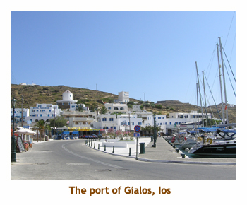
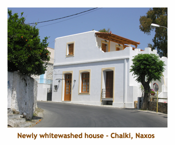
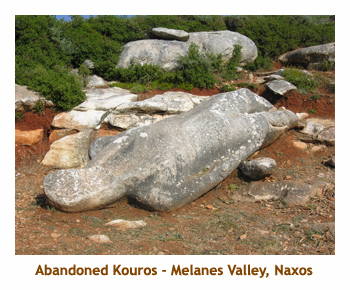

[ Home ] [ Travel ] [ Photography ] [ Pets ] [ Games] [ Rowing] [ Physics ]


A Visit to Athens and the Greek Isles - Part 3
Travel
Cruises
Past Cruises (Diaries)
Future Cruises
Rogues Galleries
Land Trips
Diaries (Land Trips)
Hawai'i - Big Island - 04'01
Hawai'i - Maui - 05'02
Hawai'i - Big Island - 04'03
Hawai'i - Kaua'i - 09'04
Hawai'i - Big Island - 04'06
Hawai'i - Maui - 04'06
Mainland China - 05'07
Phoenix, Arizona - 12'07
Greek Isles - 05'08
Hawai'i - Kaua'i - 09'08
Hawai'i - Big Island - 09'09
Hawai'i - Maui - 05'12
Hawai'i - Big Island - 04'13
Ireland - 08'13
Mexico - Cancun 11'13
France/Belgium/Lux 07'15
Hawai'i - Big Island - 05'17
England / Wales - 06'17
Hawai'i - Big Island - 09'19
Photography
Cameras
Underwater
Pets
Tara
Blackie
Whitey
Muffy
Ollie
Rusty
Fluffy
Rufus&Dufus
Games
Rowing
Physics
Day 13, 14 (June 2, 3) - Sailing to Ios (Pop. 1,654)
 It was another early start today as the ship left for Ios at 5:30 AM. The engines lulled me back to sleep and I didn't wake up until; 7:45! I had a chance to sit on the upper deck for a short time as breakfast was called at 8:30. At 9:30, we all met on the upper deck and John gave us a lecture on marriage in early Greek (Roman) society. Apparently not much written description of early Greek society exists, so we rely on records of later Roman society to approximate the earlier Greek society.
Shortly after, about 10:00 we arrived at a small bay (Manganari) for a swim
stop. As we arrived, a shepherd brought about 30 or 40 goats down to the water.
Each goat must have had a bell, because there was a cacophony of bells clanging.
We were anchored quite a way out in the bay and it looked like a nice
swimming beach. So, the captain broke out the Zodiac and ferried the swimmers
to the shore. After ferrying those who wished to swim, I asked the captain if I could
go for a ride with him. He said "Sure", and we went for a ride. We ended up at a small
fishing boat anchored nearby in the bay. After some discussion, one of the fishermen
retrieved 3 large lobster and a crab from the hold. That was to become our lunch later.
We left Manganari about noon and reached Gialos about 1:00. We had lunch on the ship (lobster) and then were given the rest of the day "on our own". We headed off walking through the town. At the ferry terminal (or at least the building where you buy the tickets), there was an internet cafe, so we sent a quick email home. We walked back along the waterfront and then hiked a short trail to a beautiful white church - the Agia Eirini. It was on a point of land and must have been subjected to almost constant winds, because the nearby trees were all sloping in one direction.
We were back on the ship at 6:00 for another reading of the
Odyssey. Oh, I should mention that Ios is the island where Homer is
purportedly buried. We saw a statue of him earlier in the town. I think that it
was after the reading that Laura announced the fact that there would be high winds
and rough seas tomorrow, so we would not chance another seasick day but
instead spend a whole extra day on Ios. After the reading Marj and I headed up
through the town intending to visit the Chora above. However, we inadvertently
took the long route, and it was starting to get dark before we reached "the
Village". So we returned to the ship, leaving our Chora visit for tomorrow.
Dinner was on our own, so we popped into the local grocery store
and bought some youghurt and chocolate milk. We joined Fred and Robin
on the upper deck for dinner - we with our yoghurt and they with their taramosalada .
And, of course, beer! Then to bed.
The next day was exactly as advertised. It was windy and the sea was very choppy. It was an excellent decision to take a down day in Ios. Nothing like being stranded in Paradise. I was up early to start the day on the upper deck. Breakfast call came at 8:00. Following breakfast, at 9:00, John did a lecture on prices and wages. Once again due to the dirth of information available from Greek records, we learned mostly from the Roman era. I wonder what a computer programmer would have made in ancient Rome?
Marj and I headed out for another walk around the town. This time we
decided to take the city bus up to "the Village", so we would be sure to
get to the right place. The bus came every half hour, so we didn't have to
wait long. It went up far past where we had walked to the previous evening.
After about 10 minutes we arrived at the Chora and got off the bus.
Across the street was a beautiful whitewashed cathedral (Agia Aekaterini -
St. Catherine). We walked over to the church, took some pictures, and then
headed up village on the hillside behind the church. The narrow streets were
twisty, with occasional views of the ocean. There were loads of shops,
restaurants, bars and hotels. A strange thing was that there were several
Irish bars and restaurants - in Greece? What a beautiful town!
At noon, we encountered a restaurant called "Seven Eleven" and decided to give it a try. It had Greek and foreign food on the menu. Marjorie had mousakka, and I had a snitzel. It was very good. The young waitress didn't sound Greek, so I asked her where she was from. Halifax! What a small world. The permanent population of the island is about 1,600 people, but in the summer it swells to 20,000! We were there just prior to tourist season, so it seemed quite deserted. Actually we noticed this on most of the islands. Most of the restaurants we graced were almost empty.
It was a beautiful day, so we walked back to the ship. There was a special footpath
that shortcutted the switchback road and it didn't take us all that
long. There was a small grocery store across from the ship so we decided to
supplement our usual breakfast fare with yoghurt and chocolate milk. Monica
allowed us to store the food in her fridge. It worked out well and relieved the
monotony of the same old breakfast every day.
We spent the remainder of the afternoon reading on the rear deck.
At 7:00 John did another reading from the Odyssey. Dinner was at
8:00 . The entree was mousakka. Marj didn't mind at all having it twice in
one day, and claimed it was even better on the ship. After dinner we did another walk
along the marina checking out the beautiful yachts and a large
pirate ship. Then to bed.
Day 15 (June 4) - Sailing to Naxos (Pop. 20,000)
Another early morning up on the upper deck. The wind had abated and it looked good for sailing today. Breakfast call was early today - 7:00. An hour later we sailed away from Ios, heading to the island of Naxos. It was relatively calm in the open water between the islands. Smooth sailing!
At about 11:00 we reached Naxos and pulled into a small bay (Kastraki)
for a swim stop. We stayed in the bay for about an hour, then pulled up anchor
and headed to the main town - Naxos Town. It was about a two hour sail, so
we had lunch onboard during the transit (1:00). We finally arrived in Naxos Town
about 2:00. It was one of the largest towns we had visited on the islands,
with a population of around 15,000 people. The town was mostly along the waterfront,
with no Chora on the hillside above. In the middle of the town was a large
Venetian fortress, part of the Kastro built in 1207. However, we didn't have
time to explore the town at this point, as the bus was there for our trip around
the island.
 Naxos is a huge island. Once we got away from the ocean, it seemed that we were back on the mainland. The lanscape was parched, with low shrubs and scraggly trees. It is very mountainous, so the road was quite twisty. We passed through the village of Ano Sagri, with the beautiful little chapple of Agios Ioannis Gyroulas, and then finally reached the town of Chalki (or Halki) in the Tragaia Valley about 3:30.
Chalki was an interesting town - a mix of newer homes and buildings and
some ancient decrepit buildings. At one time it was the capital of Naxos.
We walked to the old Byzantine Fragopoulis
tower, which is now a hotel or hostel. Then we walked along a path through an
olive orchard to a very old church. I think it's called Panagia Protothroni.
Unfortunately it wasn't open. Then we retraced our steps into the town and
headed to the Kitron "Vallindras", a local distillery. Kitron is a kind of lemon
liquor, except the fruit is much larger, like an orange, and it is made from the leaves,
keeping much more flavour than the fruit. The distillery was opened in 1896.
We sampled a number of different kitron drinks. Too strong for me!
 After
tweaking our thirst at the distillery, we wandered to an outdoor restaurant
and had something more thirst quenching. I had an Alpha beer. Then we
wandered back to the bus to continue our sightseeing trip. We passed through
the village of Moni, clinging to the hillside. Finally we came to the
Melanes Valley, home of some huge marble quarries and the famous abandoned
Kouroi, huge marble statues. We parked just off the road and headed down an
Oleander lined pathway. The trail wound through a private garden and suddenly there
was a kouros lying in front of us. It was very weathered and broken in places, but was
quite impressive. We continued on the path and came to an open area where we had
to climb up the hillside. Part way up was a second kouros, lying on its back.
Nearby was a pedestal with feet broken off above the ankle. I presume these
used to be attached to the fallen kouros. We were running out of our alloted time,
so had to hurry back to the bus. About 30 minutes later we were back at the ship in
Naxos Town. It was 6:00.
Dinner and the evening were "on our own". We found a nice restaurant (not hard in Greece!) and had a small meal. I had a Greek salad and Marj had yoghurt. I must say that the Greek salads have been excellent, although each restaurant makes them differently. There is a large variation in the cheese too, from very creamy to dry and crumbly. But it's all good!
There was still some evening daylight so we walked along the dock, over a
causeway and onto the little islet of Palatia. On top of a small hill is the Portara
gateway to the unfinished Temple of Apollo. A pathway encircles the site, so
you can view it from all sides. It was a great overlook of the ocean and a Blue
Star ferry was just coming into the dock. Walking back to the ship we stopped
at a statue (an obelisk, actually) commemorating Athina.
Back on board we taught Fred and Robin the dice game and played a few
rounds. I think they enjoyed it. It was a great day. Time for bed.
Day 16 (June 5) - Sailing to Paros (Pop. 10,300)
Up early as usual for some tiume on the upper deck. Today was to be spent on Paros, an island that we would see in the distance. Breakfast call was at 8:00. At 9:00 we set sail for Paros. By 10:30 we had reached the island and stopped into a small bay (Amoelas) for a swim. The bay was fairly deserted other than a few people on the beach. Some of the group swam off the ship, while others were zodiaced ashore for a beach swim. After about an hour we raised anchor and sailed to the port of Naousa, where we would anchor for the night. It was about 12:30 and we were given time for lunch "on our own". It wasn't much time, as a tour bus would be picking us up at 2:00.
We quickly picked out a nearby restaurant and Marj, Paul and I ordered
a couple of pizzas (and beer). Greek restaurants are annoyingly slow, but we
managed to finish the pizza and pay our bill in time to catch the bus.
We left Naousa on schedule and headed over the hills towards the town of Paroikia. The landscape was once again arid, although there were some olive and citrous orchards which were obviously irrigated. As we drove through the hills, we passed by the remains of three 17th century churches, Tris Ekklisies. Shortly we reached Paroikia, the main city on the island. The bus stopped on the harbour front, very near to the famous windmill.
We walked as a group to visit the Ekatontapyliani (Church of 100 Doors).
We were the only people there so it was peaceful to walk through the church.
The church is the oldest church in Greece in continuous use and is a major
Byzantine monument. Its official name is the Dormition of the Virgin. It consists of
3 interlocking builds and is purported to have 99 windows and doors. According
to legend, when the 100th door is found, Constantinople will return to the Greeks.
The inside of the church was beautiful with many chandeliers, carvings and
paintings. I really enjoyed visiting this church.
After visiting the church, we were given about an hour of our own. We wandered through the narrow streets and alleyways stopping at boutiques and handicraft shops. At every turn was an outdoor restaurant or bar. I just love walking through these little towns.
We returned to the bus a bit early, so watched the high speed ferry
dock and unload its passengers. Finally we were all back on the bus and off
through the mountains into the heart of the island. We passed by several
small villages perched on the mountain side. Eventually we came to the village
of Lefkes. The bus stopped here and let us out to explore the village.
It was an exquisite little village. The streets were narrow and twisty opening
up onto small gardens or plazas. One could quite easily get lost here! We
wandered around for a while and then ended up at an outdoor
restaurant / bar where a lot of the group had gathered. Most were having
drinks, but we decided to wait until we got back to the ship. Then we returned to
where we had been dropped us off to reboard the bus.
It was a fair drive back to the ship. We passed mountains and valleys and could finally see the ocean. We were dropped off at the ship in Naousa about 5:00. It had been a great sightseeing trip. We had a couple of hours to wander around the town of Naousa. The harbourfront was amazing, with all the yachts and fishing boats and the sidewalk cafes along the docks. The streets in behind the main street were narrow and twisty, and either motorbikes or pedestrian only. Everything was whitewashed with blue trim.
We reboarded the ship at 7:00 for another reading from the Odyssey.
I think that Odysseus had returned home at this point and was hiding out
with his shepherd. Dinner was on the ship at 8:00. After dinner we
did another walk along the marina. It was a beautiful evening. Then
it was back on board and to bed.
Day 17 (June 6) - Sailing to Delos, Mykonos (Pop. 4,500)
Today was to be the second repeat visit of the trip - we had been to Delos and Mykonos before. However, our previous trip had been only for an afternoon, and that was spent on Delos. Hence, we really hadn't seen any of Mykonos. Also I was hoping that this time it would be sunny (for photos) as last time it had been overcast all day. It was an early start from Paros, with the engines starting up at 6:30. Up on deck it was cold and overcast. The call for breakfast came at 7:30 when we were well underway. As we sailed towards Delos, we were joined by three dolphins (or perhaps more). They were at the front of the ship and seemed to swim right underneath. Soon they disappeared and we sailed on unaccompanied.
We arrived at Delos about 9:30. It was still quite cool and cloudy. We anchored
in the bay and needed the zodiac to reach the dock. I went with the first
group of 4 or 5 passengers. This was a mistake. The bottom of the zodiac
was ankle deep with water, so our group had the honour of soaking it up
with our socks and runners. Subsequent groups had no water problem thanks to us.
Then the captain missed the first (easily accessible) set of steps on the
dock and instead took us to another area behind a docked yacht where we had
to duck under ropes or risk decapitation.
The zodiac continued shuttling passengers and soon we were all gathered on the shore at the gates to the archaeological site. We had a further wait as the guide hadn't arrived yet. He finally arrived and we headed off through the ruins. It was still quite cold and started to rain. Oh no, I wanted sunshine! Then, like magic, part way through our tour, the sun broke through and it became a beautiful day. We did the same tour as on our previous tour, but then did some extra (which was nice). Our guide parted ways with us at the entrance to the museum. We entered the museum which had many statues, sculptures, etc from the site. Then we hiked up to the highest part of the ancient city to see the floor mosaics of the House of Dolphins and the House of Masks.
We hiked back to the dock and waited for the zodiac to shuttle us back to the ship.
It was quite warm by now. We were all back on the ship by 1:00. It was time to
sail to Mykonos. Along the way we stopped at a small bay (Agios Ioannis) for a swim.
At 2:00 lunch was served as we floated in the bay. After lunch we set sail for
Mykonos Town.
We were in for a surprise as we entered the Mykonos Town harbour. Because our itinerary was not hard and fast, the captain was requesting docking space as we arrived at each island. Today we were out of luck, the harbour was full. Instead we had to sail about 2 or 3 miles north of the town to the new cruise ship terminal (under construction). The dock was OK, but we were a long way from town. However, a decision was quickly reached and the captain headed off to rent a car. Of course, being a typical European country, the biggest car available was what we would call a "compact" car. Marj and I went in the first shuttle run. There were five of us (and the captain). Three of us squished into the back seat, while Dave and Jan layered into the front passenger seat. It was crowded! Subsequent runs only took 4 passengers each time. Much better idea! It was about 4:00 and we had dinner and the rest of the evening "on our own".
Paul was in our first shuttle group, so he, Marj and I wandered together
through the town. We headed into the narrow streets dodging the motorcycles.
This was certainly the busiest island town that we visited so far. Lot's of
people everywhere. It was very hot and we came upon a store advertising
smoothies. We each ordered one (mine was strawberry and banana), but were
disappointed. The ingredients were not very cold, and a couple of ice cubes
had been tossed in later, rather than being blended with the drink. So far,
Aigina was winning the smoothie contest by a mile.
We took one little alley that led to an ocean view. When we
got to the end of the alley, the we had a wonderful view of the Kato Myloi
area with the 5 windmills. On the rocks, just in from of us, 3 large white
pelicans were lying in the sun. This was the area called "Little Venice". The
buildings were flush with the ocean.
We found an oceanside bar and decided to stop in for a drink. Our seats were on a porch overhanging the ocean. What a view! Paul and I both ordered a Mythos beer. (Marj just had water). The first surprise was that we were served 12 oz bottles - everywhere else in Greece they served 500 ml bottles. Then came the second surprise. We normally paid E2.50 to E3.00 at restaurants for the half litre bottle. Our bill was E14.00 for the two small beer! Mykonos was expensive! We headed back into the interior of the town. Nearby we heard a brass band that sounded like each musician was playing a different song. Peeking in a large white building, there was a young kids' band practicing. Further on we encountered a group of kids doing Greek dancing at a replica stone theatre. An interesting town.
We eventually came upon a large plaka with a number of restaurants. We
picked one and had dinner there. As we were eating, a huge pelican came
walking through the restaurant. One of the waiters retreived a large fish from
the kitchen and tossed it down the grateful beak. Young children were running
around the pelican having a great time. Then suddenly there were two
pelicans. I guess the free handouts atrracted them. After eating we slowly wandered
back along the docks to the place where our captain had agreed to pick us up.
The captain had planned on doing hourly pickups, but, of course, everyone decided to
come back at about the same time. Anyway, we got in on the 9:30 pickup
and were back on the ship by 10:00. It was a great day. time for bed.
Day 18 (June 7) - Sailing to Tinos (Pop. 9,000), Syros (Pop. 23,000)
Another new day. Up at 6:30. I decided to go for a walk on the new dock to see what was happening. There were palettes of slate tiles, presumeably to be used as a surface on the dock. Two workmen were splitting stone and building a decorative wall along the center of the dock. At 8:00 the call came for breakfast so I reboarded the ship. At 9:00 the engines fired up and we were off to the island of Tinos. It was a fairly short distance and we arrived at Tinos about 10:30. We were given until 1:00 for lunch "on our own".
We headed off onto the island. Tinos town was a typical island village.
The main street followed the coast line with docks and yachts on one side and
commercial buildings on the other side. A number of restaurants had tables
outdoors along the sidewalk. From there, the town was built up the hill. Going
deeper into the town (ie. up), the streets became narrower, eventually pedestrian
only. Everywhere were restaurants, bars and souvenir shops.
What was unusual about this town was it had a second "main" street running right up the hill from the waterfront. This street, called Megalochari, runs for several blocks and terminates in a large plaka in front of an immense church (Panagia Evangelistria). Running parallel to this street is a narrow pedestrian alley lined with shops selling huge candles and religious paraphenalia. People buy these items and carry them up to the church in order to pray for health or other reasons. It is also common for pilgrims to crawl all the way up the road and into the church in order to receive special blessings.
We followed a small crowd walking up the street and even passed
several pilgrims crawling along. The candles the people were carrying were
huge - about 5 to 6 feet long. At the top of the hill was a larger than life size statue
of a crawling woman. The religious shops were packed with pictures, carvings,
etc. as well as embossed metal tags featuring body parts such as arms and legs.
I think these were to specify which parts of the body needed healing.
The church complex was huge. It was three stories from the front. The bottom floor (grade level) contained "chambers featuring religious artifacts and small chapels. In one of the chapels a child was being baptized. We went up the outside stairs to the main floor where the church itself was. We were wearing t-shirts and shorts so I decided not to enter the church. However, Marj and some others lined up and went in anyway. At least they weren't thrown in jail! The church was quite dark inside, but i managed to stick my camera through a window and get a photo. Marj (and others) said that the religious fervor was quite high inside. I guess those who crawled all that way wanted to get their money's worth.
I walked around the outside cloisters exploring the immense church.
There were outbuildings all around. Finally Marj exited from the church and
we headed back down to the lower town, taking a narrow alleyway lined with
religious shops. I noticed that these shops, especially those further from the
church, were hedging their bets and selling regular Greek Isles souvenirs to
those not interested in regilious stuff.
We still had some time so we sought out a good dockside restaurant. I had my usual Greek salad and beer, while Marj had some yoghurt and honey. Then it was time to get on the ship again and set sail. It was about 1:15 when we left the port and headed across the water to Syros.
We anchored at the north end of Syros for a swim stop at a small bay
(called Sykamia?). After the swim we continued on to Ermoupoli, the main
city on the island. We arrived about 3:00. Ermoupoli was unlike any
of the other towns we had been to. Syros is the administrative center
of the Cycladic Islands (sort of like a provincial capital) and is the most
populous island of the group. The town featured many 3 or 4 story buildings,
unusual for island architecture. There were few souvenir shops and most
buildings were commercial, administrative or hotels, sort of like a large
city's downtown area. Most of the streets were autombile size with some
sporadic traffic. We headed into the town and came upon a huge public
square in front the the town hall. Continuing up the hillside, we came to a
huge church. Past the church was a lookout over a bay and a public beach.
Even this far into the town, we didn't see anything resembling the narrow
alleys and small shops of the other islands.
We really enjoyed our walk around the town. It was a saturday and most of the shops were closed. The local business hours throughout Greece were quite unusual. Stores would be open in the morning and then close about 2:00 PM. On weekdays they would reopen about 5:00. However, on Saturdays they would remain closed in the afternoon and evening. Of course the souvenir shops and restaurants that catered to tourists would be open at all hours (or so it seemed). We were also warned that restaurants often didn't serve dinner until 8:00 PM or later. That might suit the locals, but tourist pressure has made then accessible throughout the day. We never had any problem finding an open restaurant at any time for lunch or dinner.
I returned to the ship earlier than Marj, as I had to use the bathroom and
couldn't find any public toilets on our walk. I couldn't find Marj after that so we
spent the rest of our free time each taking pictures in different parts of the
town. We met back at the ship just before 6:00. Marj had done her usual
grocery store visit to pick up some milk and yoghurt. It was fun shopping
in the Greek stores as all the labels were in Greek. You weren't sure if
you were buying yoghurt, cottage cheese or margerine! And flavourings
were fun to guess too.
At 6:00 we all gathered on the upper deck for the present exchange. This was the popular format where people drew numbers and then in order chose a present from the pile or stole from someone who had already opened a present. You know the drill! There were 21 of us, so it took quite a while. All in all, people's choices of gifts were excellent, so there was lots of stealing and intrigue. The gifts that we bought were each stolen a couple of times, so we were pleased about that. Marjorie ended up with a small pottery bowl with a lid, and I chose a deck of cards with mythological beings on them. We were quite pleased with our choices. The whole process took about 1.5 hours.
Dinner call came at 8:00. We had our present exchange and "farewell
dinner" tonight, because tomorrow night we would be packing and getting
ready for our 3:00 AM departure to the airport. After dinner we jumped ship
again and wandered along the docks. There's nothing nicer than walking
by rows of yachts and fishing boats on a warm evening. It's heaven! Then
to bed.
Day 19 (June 8) - Sailing to Kea (Pop. 1,600), Lavrio
Sadly it was our last full day in the islands. It was a long sail to our next destination, Kea, so we left early from Syros at 6:00 AM. About 8:00 we passed a small deserted island called Giaros and I think the plan was to stop there for breakfast and a swim break. However, for whatever reason, we bypassed the island. Breakfast was served just after 8:00 as we motored along. About 10:00, we arrived Kea and stopped at a small bay (Otzias) for a swim break. The captain donned his mask and snorkel and joined the swimmers caying a plastic bag. It turned out that he was harvesting black sea urchins. When he came back on board he broke them open and scooped out the orange roe. He let everyone have a taste on a cracker. It reminded me of caviar - salty fish oil!
After the swimmers had returned, we continued our sail to the port
of Korissia. Korissia is a very small village of a few hundred people. The
port was very quiet with not too many ships at the dock. It was about noon.
After we docked, we were given about 2.5 hours for lunch on our own. The town wasn't much more than the main street. All the restaurants were along this street. We wandered the length of the waterfront to check things out. At the north end of the harbour, we looked for a cafe recommended by the captain. It turned out to be a bakery with not much in the way of lunch. A few doors down was a burger place that had good Gyros. There we left Paul, Lee and Lynn. I really just wanted a Greek salad, so we continued down the street. We finally met Jim and Josie in a nice little sidewalk cafe. We joined them and I had my Greek salad and beer. Marj had a deep fried spinach appetizer. The service was very slow at this restaurant but that's normal in Greece, right? We waited a long time for the bill, and Marj took off down the road to do some shopping at the "Shop & Go" grocery store. I think Josie headed off somewhere as well. I finally caught the waiter's attention and asked for the bill. That caused him to disappear for another 15 minutes or so. Glad we had 2 hours!
Marj returned from the grocery store and found Jim and I still sitting waiting
for the bill. Fortunately the waiter showed up soon after and we paid the bill.
We all met back at the ship at 2:30 and marched to the south end of the
harbour to board our bus. We were going to the village of Ioulis, high in
the hills. It is the capital of Kea.
 It was a narrow, twisty drive up into the hills, but soon we were at the town of Ioulis.
The road went around the edge of the town, once you entered the town it was
pedestrian only. The first thing we did was locate a gelato shop. It was very hot
out and the gelato was so good! Then Paul, Marj and I headed into the interior
of the town (ie. up the hill). it was a beautiful little town. The hillside was quite
steep, so some of the "streets" were more like steps. Like other towns we had visited,
it was difficult to know where you were going as the high walls on either side
made it difficult to see. Only up and down were clear. Every so often you
would get a view down the valley, then you could tell where you were (sort of).
It was a narrow, twisty drive up into the hills, but soon we were at the town of Ioulis.
The road went around the edge of the town, once you entered the town it was
pedestrian only. The first thing we did was locate a gelato shop. It was very hot
out and the gelato was so good! Then Paul, Marj and I headed into the interior
of the town (ie. up the hill). it was a beautiful little town. The hillside was quite
steep, so some of the "streets" were more like steps. Like other towns we had visited,
it was difficult to know where you were going as the high walls on either side
made it difficult to see. Only up and down were clear. Every so often you
would get a view down the valley, then you could tell where you were (sort of).
As we walked up one street, we encountered a man on a donkey. The donkey's
body was straddling the path and its head was inside a tavern. The man on the
donkey was very talkative and asked if we were English (meaning, I think, if we
spoke English). Apparently some of our group had passed by earlier and he
had invited them in for a drink. We just said "Hi" and passed by. There were several
small churches along the way. All of the towns seemed to have many small
churches - about one church for every 10 or so houses. I assume that they
are mostly Greek Orthodox churches, so they must have many small, local
congregations. Can't complain that it's too far to go to church! At
4:00 we all met back at the entrance to the town to get back on the bus.
It was a very warm day, so the sir conditioned ride back to the ship was a
nice change.
Back at the ship we had a few minutes for a final walk along the harbourfront of Korissia. It was sad knowing that this was to be our last walk on a Greek island. Each and every island we had visited was beautiful and I just loved walking both the harbourfronts and the hillside villages. I could easily waste away my life here! But reality strikes and we boarded the ship for our last port - Lavrio, on the mainland. We were heading to Lavrio because it was only a short distance away, and it is closer to the Athens airport than Piraeus is. At 4:30, we sailed away from Kea, passing the island of Makronissos, and on up the coast of the mainland. We passed Cape Sounion and could see the Temple of Poseidon. It seemed like months ago that we were hiking around the temple.
About 6:00 we finally docked at a container dock in Lavrio. What a change
from all the little marinas we had been in for 2 weeks. We were welcomed by
a pack of "homeless" dogs. Dinner was at 7:00, a bit earlier than normal. This
was because our bus was going to be picking us up at 3:30 AM in order for
us to make our 6:00 AM flight. After dinner we all packed our bags and carried
them up from the bowels of the ship (ie. our cabins) and dumped them in the
lounge / dining area. We went out for a final walk on the dock and watched a
huge crane moving containers around. Then it was time for bed and a couple
of hours sleep.
Day 20 (June 9) - Return to Calgary
We slept until 2:30 AM when a few people started moving around. (We had planned on sleeping until 3:00). We went up to the dining area and raided the fridge for the goodies that Marj had bought yesterday at Korissia. We dined on Yoghurt and chocolate milk. Monica bellowed the 3:00 AM wakeup call and soon the ship was filled with people and their backpacks. Then it was time to say goodbye to the crew and board the bus. The crew would soon be sailing back to Piraeus to get ready for their next set of passengers. The bus ride was about 30 minutes to the airport.
Our flights were on time and relatively smooth. Our first leg as about
2.5 hours to Frankfurt. At the Frankfurt airport we picked up an English
newspaper and read about a 6.3 earthquake the previous day near
Epidaurus. We were on Kea when it happened and didn't feel a thing. It
was strong enough that a couple of people were killed. Then we boarded
the long 9 hour flight back to Calgary.We had a couple of meals, played
some cards and watched some TV.
 The flight landed on time (about noon, local time) and we did the baggage
and customs thing. Chrissy came from across the way (she was working
at the airport location) and drove us home. It was nice to be home again
to see our kitties, and to spend some time in a real bed and a real
bathroom ...
The flight landed on time (about noon, local time) and we did the baggage
and customs thing. Chrissy came from across the way (she was working
at the airport location) and drove us home. It was nice to be home again
to see our kitties, and to spend some time in a real bed and a real
bathroom ...
Overall the trip was a fabulous success. We loved Athens and all
of the islands, and it was so nice to travel with such a great bunch of
people. We loved being up on deck as we plowed through the blue
waters (except for one memorable day).
And, of course, we really appreciated the efforts of John and Laura
in making it such a wonderful trip. The only negative (and it's fast fading
from my mind) were the sleeping conditions on the boat which certainly
weren't the greatest. Oh yes, another negative was that the trip
ended far too early! I was ready for a few more islands.